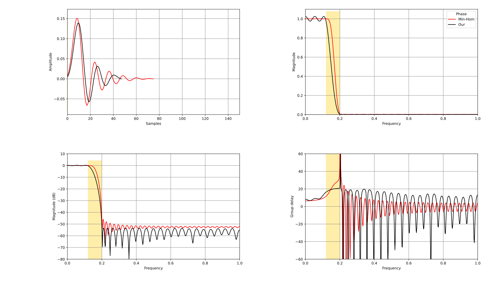
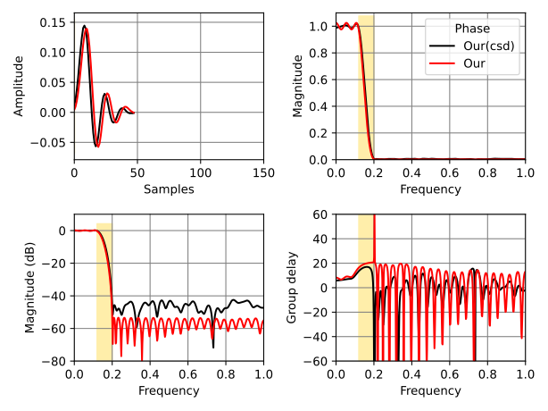
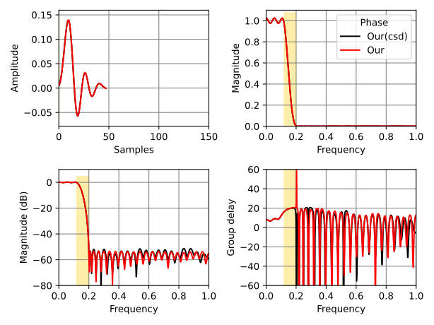

In the realm of digital signal processing, FIR (Finite Impulse Response) filters play a crucial role in shaping signal characteristics. However, traditional FIR filters often require expensive multiplication operations, which can be computationally expensive and hardware-intensive. The multiplierless project presents an innovative solution to this challenge by implementing FIR filters that avoid multiplication operations entirely through the use of Canonical Signed Digit (CSD) representation and advanced optimization techniques.
This essay provides a comprehensive analysis of the multiplierless project, exploring its mathematical foundations, algorithmic implementations, and practical applications. We'll delve into the spectral factorization approach, the CSD representation system, oracle-based optimization, and the ellipsoid method for convex optimization. The project represents a sophisticated approach to filter design that balances mathematical rigor with practical hardware efficiency.
At the heart of the multiplierless project lies the spectral factorization problem. Given an autocorrelation sequence r[k], the goal is to find a minimum-phase impulse response h[k] such that:
The Kolmogorov 1939 approach implemented in spectral_fact.py follows these mathematical steps:
The mathematical formulation can be expressed as:
where M is the oversampling factor and R[i] represents the magnitude spectrum.
The CSD (Canonical Signed Digit) system is a signed-digit number representation that uses digits from the set {-1, 0, +1}. This representation is particularly valuable for multiplierless implementation because:
The CSD conversion process implemented in csd.tpy follows this algorithm:
The conversion function to_csd(num, places=0, nnz=4) allows specification of the number of non-zero digits (nnz) and fractional places.
The ellipsoid method is used for solving convex optimization problems. For the multiplierless filter design, it efficiently finds the optimal filter coefficients while satisfying multiple constraints:
The optimization oracle system implemented in lowpass_oracle.py follows a specific decision process:
spectral_fact.py)The spectral factorization implementation in src/multiplierless/spectral_fact.py uses the Kolmogorov 1939 approach:
def spectral_fact(r: np.ndarray) -> np.ndarray:
"""Computes the minimum-phase impulse response which satisfies a given auto-correlation."""
n = len(r)
mult_factor = 100 # oversampling factor
m = mult_factor * n
# ... complex mathematical operations including FFT and Hilbert transformslowpass_oracle.py)The lowpass oracle implements constraint checking in a specific order:
lowpass_oracle_q.py)The LowpassOracleQ class integrates CSD conversion with the optimization oracle:
def assess_optim_q(r, Spsq, retry):
"""Assess and optimize filter coefficients with CSD constraints."""
# Convert to CSD format
h_csd = to_csdnnz(h, nnz=4)
# Apply spectral factorization
h = spectral_fact(h_csd)
# Assess optimization
g, f = oracle.assess_optim(h, Spsq)
return g, f, NoneThe overall optimization process can be visualized as:
The primary advantage of multiplierless filters is their suitability for hardware implementation:
The SVG diagrams in figs/ illustrate the performance characteristics:



The multiplierless approach handles multiple filter design constraints:
nnz parameterThe ellipsoid method implementation supports parallel cuts, which significantly accelerates convergence:
# Parallel cuts allow multiple constraint violations to be addressed simultaneously
return (g, f), None # g: gradient, f: function value, Spsq: updated best-so-far Sp^2The to_csdnnz() function allows adaptive sparsity control:
def to_csdnnz(num, nnz=4, debug=False):
"""Convert to CSD format with limited non-zero digits."""
# Intelligent digit placement algorithm
# Returns CSD string with specified number of non-zero digitsThe system supports multiple objective functions:
The multiplierless project provides a solid foundation for future research and development:
The multiplierless project represents a sophisticated approach to FIR filter design that successfully balances mathematical rigor with hardware efficiency. By combining spectral factorization, CSD representation, and oracle-based optimization with the ellipsoid method, it provides a complete solution for designing multiplierless digital filters.
The mathematical foundation is sound, based on Kolmogorov's 1939 spectral factorization approach. The CSD representation enables hardware-friendly implementations, while the oracle system ensures that all design constraints are systematically satisfied. The ellipsoid method provides efficient convergence to optimal solutions.
This approach demonstrates how advanced mathematical algorithms can be adapted for practical hardware constraints without sacrificing theoretical correctness. The multiplierless project stands as a testament to the ingenuity of its developers in bridging the gap between theoretical signal processing theory and practical hardware implementation.